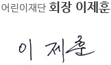

CEO 인사말
재단소개 > CEO 인사말"/>
-
한국을 대표하는 아동복지 전문기관이라는 소명과 자부심으로 일하고 있는 우리 재단은 사람을 귀하게 여기는 마음으로 아동의 생존권, 보호권, 발달권, 권리옹호 지원을 위한 복지 사업을 펼치고 있으며, 국내 아동뿐 아니라 가난과 질병으로 고통 받는 해외 아동을 위해 활동의 폭을 넓혀가고 있습니다.
-
대한민국이 지난 60여 년간 이루어낸 물질적 풍요에도 불구하고 아동복지에 있어서는 해결해야 할 과제가 많습니다. 우리 재단은 현재에 안주하지 않고 끊임없는 쇄신의 과정을 거쳐 사업의 발전을 도모할 것이며, 이를 통해 아동에게 가장 필요하고 꼭 맞는 복지 서비스를 제공함으로써 아동의 삶을 향상시키는데 최선을 다하겠습니다.
-
더불어, 우리 어린이재단은 지난 날 우리가 받았던 소중한 사랑을 한국을 넘어 지구촌의 소외된 아동들에게 돌려주는데 더욱 노력할 것입니다. 국경, 인종, 종교, 성별을 초월하여 인류애를 실천하는 국제 어린이재단연맹 회원기관으로서 국제 사회와의 끊임없는 소통을 건실하게 소임을 다하는 국제 NGO로 거듭나겠습니다.
우리 어린이재단은 1948년 해외원조기관 CCF에서 근원하여 지난 65년 동안 이땅의 소외된 아동들을 위해 나눔을 실천해오고 있습니다. 어린이재단에 보내주시는 한결같은 관심과 사랑에 깊이 감사 드리며 여러분 가정에 건강과 행복이 가득 하시기를 진심으로 기원합니다.
